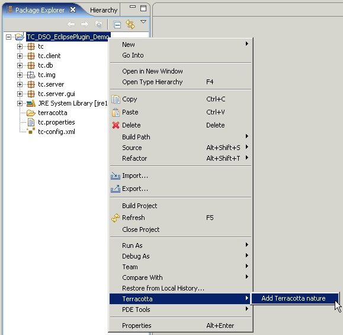
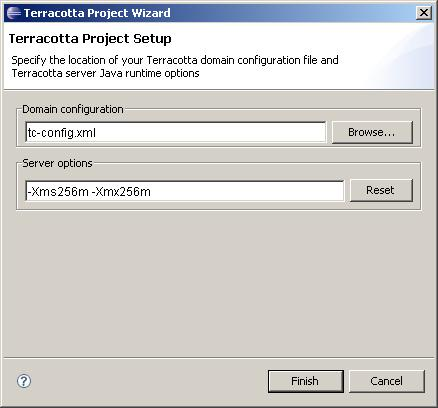

You add Terracotta capabilities to an existing Java project by
invoking the project context menus and selecting the Add
Terracotta Nature item under the Terracotta menu.

A dialog will be displayed asking for the name of any existing
Terracotta configuration file that may already exist in your
project, defaulting to tc-config.xml, as well as
any Java options that should be used when running the Terracotta server.

If no configuration file exists at the specified location, a default
configuration file will be created. A folder named terracotta
will be created at the root of your project workspace, meant to be the location of log
files and other artifacts that are created during the execution of
your DSO system. Each of your Java modules are inspected for the
purpose of providing graphical adornments associated with the
configuration you provided. Finally, the project node in the
Workspace Browser will be adorned with an indication that Terracotta
capabilities have been added.